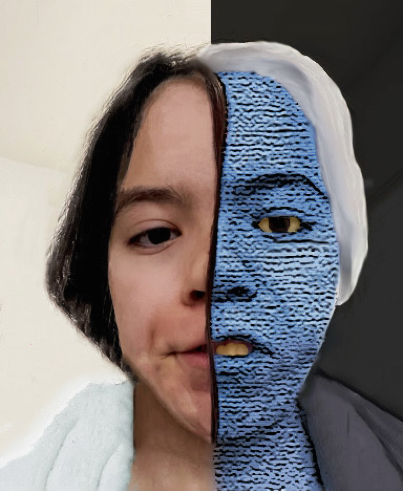

About me
Feel free to learn a little about me

If I was Two-Face from the Batman animated series
Who am I?
I am a creative individual with a passion for bringing ideas to life. I specialize in designing and reimagining logos, creating mock-ups in Photoshop, and crafting eye-catching posters, flyers, and more. My work combines creativity and precision to deliver designs that leave a lasting impression.
My story
During my senior year of high school, I decided to take yearbook as an elective. My responsibilities included gathering quotes, taking pictures of students involved in sports and extracurricular activities, and arranging these elements on the pages I worked on. I added images, quotes, and body paragraphs, and even created cutouts of students to include on the pages. A year later, during the pandemic, I realized this was what I wanted to pursue as a career. I earned my associate degree in December 2024.
Other fun work I've done
Original

Barb cosplay

Barb

❮
❯